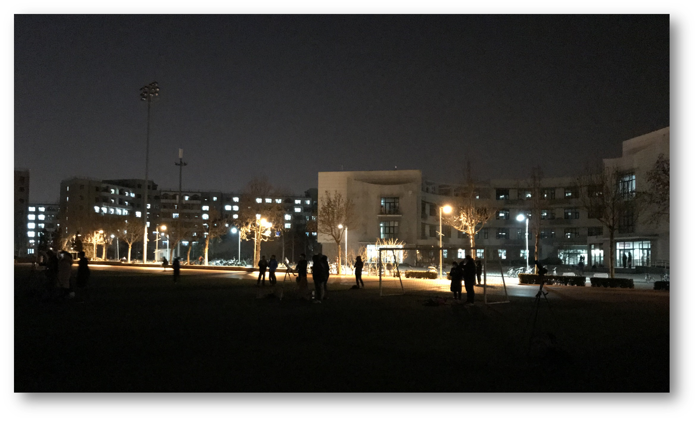
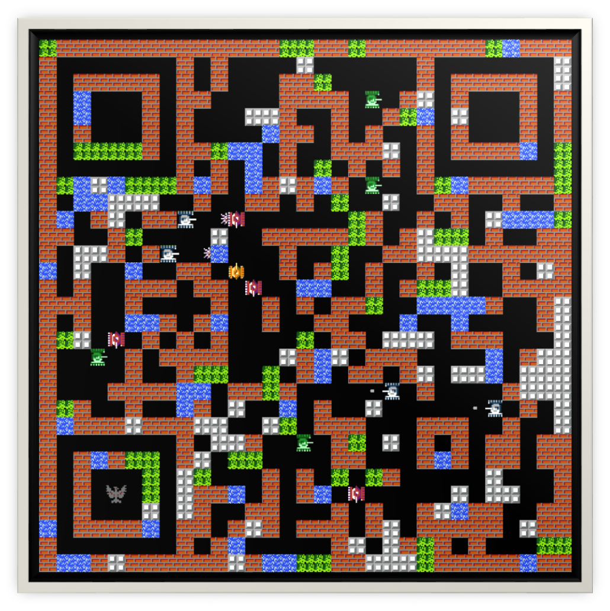

<!DOCTYPE html>
<html>
<head>
    <!-- hexo-inject:begin --><!-- hexo-inject:end --><meta charset="utf-8">
    
    <title>About me | HtPsi&#39;s Wiki</title>
    
    
        <meta name="keywords" content="About me">
    
    <meta name="viewport" content="width=device-width, initial-scale=1, maximum-scale=1">
    <meta name="description" content="A brief Biography My name is Chong Wang I’m now a Ph.D. Candidate in Tsinghua University. Research Area：cQED(see more details and  progress) Interested in Physics, Quantum Computation, Music, Sports">
<meta property="og:type" content="website">
<meta property="og:title" content="About me">
<meta property="og:url" content="https://wiki.htpsi.me/about/index.html">
<meta property="og:site_name" content="HtPsi&#39;s Wiki">
<meta property="og:description" content="A brief Biography My name is Chong Wang I’m now a Ph.D. Candidate in Tsinghua University. Research Area：cQED(see more details and  progress) Interested in Physics, Quantum Computation, Music, Sports">
<meta property="og:image" content="https://wiki.htpsi.me/about/mypicture1.png">
<meta property="og:image" content="http://progressed.io/bar/4?scale=10&title=level4&suffix=X">
<meta property="og:image" content="http://progressed.io/bar/55?title=skilled">
<meta property="og:image" content="http://progressed.io/bar/10?title=Primary">
<meta property="og:image" content="http://progressed.io/bar/35?title=entry-level">
<meta property="og:image" content="http://progressed.io/bar/10?title=Primary">
<meta property="og:image" content="http://progressed.io/bar/15?title=Primary">
<meta property="og:image" content="http://progressed.io/bar/30?title=entry-level">
<meta property="og:image" content="http://progressed.io/bar/70?title=proficient">
<meta property="og:image" content="https://wiki.htpsi.me/about/tsinghua3.png">
<meta property="og:image" content="https://wiki.htpsi.me/about/tsinghua.jpg">
<meta property="og:image" content="https://wiki.htpsi.me/about/jiaoda.png">
<meta property="og:image" content="https://wiki.htpsi.me/about/jiaoda1.png">
<meta property="og:image" content="https://wiki.htpsi.me/about/wechat1.png">
<meta property="og:updated_time" content="2018-03-03T09:42:00.330Z">
<meta name="twitter:card" content="summary">
<meta name="twitter:title" content="About me">
<meta name="twitter:description" content="A brief Biography My name is Chong Wang I’m now a Ph.D. Candidate in Tsinghua University. Research Area：cQED(see more details and  progress) Interested in Physics, Quantum Computation, Music, Sports">
<meta name="twitter:image" content="https://wiki.htpsi.me/about/mypicture1.png">
    

    
        <link rel="alternate" href="/atom.xml" title="HtPsi&#39;s Wiki" type="application/atom+xml">
    

    
        <link rel="icon" href="/wiki.png">
    

    <link rel="stylesheet" href="/libs/font-awesome/css/font-awesome.min.css">
    <link rel="stylesheet" href="/libs/open-sans/styles.css">
    <link rel="stylesheet" href="/libs/source-code-pro/styles.css">

    <link rel="stylesheet" href="/css/style.css">
    <script src="/libs/jquery/2.1.3/jquery.min.js"></script>
    <script src="/libs/jquery/plugins/cookie/1.4.1/jquery.cookie.js"></script>
    
    
        <link rel="stylesheet" href="/libs/lightgallery/css/lightgallery.min.css">
    
    
        <link rel="stylesheet" href="/libs/justified-gallery/justifiedGallery.min.css"><!-- hexo-inject:begin --><!-- hexo-inject:end -->
    
    
    
    


</head>
</html>
<body>
    <!-- hexo-inject:begin --><!-- hexo-inject:end --><div id="container">
        <header id="header">
    <div id="header-main" class="header-inner">
        <div class="outer">
            <a href="/" id="logo">
                <i class="logo"></i>
                <span class="site-title">HtPsi&#39;s Wiki</span>
            </a>
            <nav id="main-nav">
                
                    <a class="main-nav-link" href="/">首页</a>
                
                    <a class="main-nav-link" href="/archives">归档</a>
                
                    <a class="main-nav-link" href="/categories">分类</a>
                
                    <a class="main-nav-link" href="/tags">标签</a>
                
                    <a class="main-nav-link" href="/about">关于</a>
                
                    <a class="main-nav-link" href="http://htpsi.me" rel="external nofollow noopener noreferrer" target="_blank">Blog</a>
                
            </nav>
            
            <div id="search-form-wrap">

    <form class="search-form">
        <input type="text" class="ins-search-input search-form-input" placeholder="Rechercher">
        <button type="submit" class="search-form-submit"></button>
    </form>
    <div class="ins-search">
    <div class="ins-search-mask"></div>
    <div class="ins-search-container">
        <div class="ins-input-wrapper">
            <input type="text" class="ins-search-input" placeholder="Type something...">
            <span class="ins-close ins-selectable"><i class="fa fa-times-circle"></i></span>
        </div>
        <div class="ins-section-wrapper">
            <div class="ins-section-container"></div>
        </div>
    </div>
</div>
<script>
(function (window) {
    var INSIGHT_CONFIG = {
        TRANSLATION: {
            POSTS: 'Articles',
            PAGES: 'Pages',
            CATEGORIES: 'Catégories',
            TAGS: 'Tags',
            UNTITLED: '(Untitled)',
        },
        ROOT_URL: '/',
        CONTENT_URL: '/content.json',
    };
    window.INSIGHT_CONFIG = INSIGHT_CONFIG;
})(window);
</script>
<script src="/js/insight.js"></script>

</div>
        </div>
    </div>
    <div id="main-nav-mobile" class="header-sub header-inner">
        <table class="menu outer">
            <tr>
                
                    <td><a class="main-nav-link" href="/">首页</a></td>
                
                    <td><a class="main-nav-link" href="/archives">归档</a></td>
                
                    <td><a class="main-nav-link" href="/categories">分类</a></td>
                
                    <td><a class="main-nav-link" href="/tags">标签</a></td>
                
                    <td><a class="main-nav-link" href="/about">关于</a></td>
                
                    <td><a class="main-nav-link" href="http://htpsi.me" rel="external nofollow noopener noreferrer" target="_blank">Blog</a></td>
                
                <td>
                    
    <div class="search-form">
        <input type="text" class="ins-search-input search-form-input" placeholder="Rechercher">
    </div>

                </td>
            </tr>
        </table>
    </div>
</header>

        <div class="outer">
            
            
                <aside id="sidebar">
   
        
    <div class="widget-wrap" id="categories">
        <h3 class="widget-title">
            <span>Catégories</span>
            &nbsp;
            <a id="allExpand" href="#">
                <i class="fa fa-angle-double-down fa-2x"></i>
            </a>
        </h3>
        
        
        
         <ul class="unstyled" id="tree"> 
                    <li class="directory">
                        <a href="#" data-role="directory">
                            <i class="fa fa-folder"></i>
                            &nbsp;
                            Diary
                        </a>
                         <ul class="unstyled" id="tree">  <li class="file"><a href="/wiki/hello world/">Hello World</a></li>  </ul> 
                    </li> 
                     <li class="file"><a href="/wiki/index/">Welcome to HtPsi's Wiki</a></li>  </ul> 
    </div>
    <script>
        $(document).ready(function() {
            var iconFolderOpenClass  = 'fa-folder-open';
            var iconFolderCloseClass = 'fa-folder';
            var iconAllExpandClass = 'fa-angle-double-down';
            var iconAllPackClass = 'fa-angle-double-up';
            // Handle directory-tree expansion:
            // 左键单独展开目录
            $(document).on('click', '#categories a[data-role="directory"]', function (event) {
                event.preventDefault();

                var icon = $(this).children('.fa');
                var expanded = icon.hasClass(iconFolderOpenClass);
                var subtree = $(this).siblings('ul');
                icon.removeClass(iconFolderOpenClass).removeClass(iconFolderCloseClass);
                if (expanded) {
                    if (typeof subtree != 'undefined') {
                        subtree.slideUp({ duration: 100 });
                    }
                    icon.addClass(iconFolderCloseClass);
                } else {
                    if (typeof subtree != 'undefined') {
                        subtree.slideDown({ duration: 100 });
                    }
                    icon.addClass(iconFolderOpenClass);
                }
            });
            // 右键展开下属所有目录
            $('#categories a[data-role="directory"]').bind("contextmenu", function(event){
                event.preventDefault();
                
                var icon = $(this).children('.fa');
                var expanded = icon.hasClass(iconFolderOpenClass);
                var listNode = $(this).siblings('ul');
                var subtrees = $.merge(listNode.find('li ul'), listNode);
                var icons = $.merge(listNode.find('.fa'), icon);
                icons.removeClass(iconFolderOpenClass).removeClass(iconFolderCloseClass);
                if(expanded) {
                    subtrees.slideUp({ duration: 100 });
                    icons.addClass(iconFolderCloseClass);
                } else {
                    subtrees.slideDown({ duration: 100 });
                    icons.addClass(iconFolderOpenClass);
                }
            })
            // 展开关闭所有目录按钮
            $(document).on('click', '#allExpand', function (event) {
                event.preventDefault();
                
                var icon = $(this).children('.fa');
                var expanded = icon.hasClass(iconAllExpandClass);
                icon.removeClass(iconAllExpandClass).removeClass(iconAllPackClass);
                if(expanded) {
                    $('#sidebar .fa.fa-folder').removeClass('fa-folder').addClass('fa-folder-open')
                    $('#categories li ul').slideDown({ duration: 100 });
                    icon.addClass(iconAllPackClass);
                } else {
                    $('#sidebar .fa.fa-folder-open').removeClass('fa-folder-open').addClass('fa-folder')
                    $('#categories li ul').slideUp({ duration: 100 });
                    icon.addClass(iconAllExpandClass);
                }
            });  
        });
    </script>

    
        
    <div class="widget-wrap widget-list">
        <h3 class="widget-title"><span>Liens</span></h3>
        <div class="widget">
            <ul>
                
                    <li>
                        <a href="http://acfun.cn" rel="external nofollow noopener noreferrer" target="_blank">Acfun</a>
                    </li>
                
                    <li>
                        <a href="http://bilibili.com" rel="external nofollow noopener noreferrer" target="_blank">Bilibili</a>
                    </li>
                
                    <li>
                        <a href="https://www.venganza.org/" rel="external nofollow noopener noreferrer" target="_blank">Church of the FSM</a>
                    </li>
                
                    <li>
                        <a href="http://www.scp-wiki.net/" rel="external nofollow noopener noreferrer" target="_blank">SCP-Foundation</a>
                    </li>
                
                    <li>
                        <a href="https://www.pixiv.net/" rel="external nofollow noopener noreferrer" target="_blank">Pixiv</a>
                    </li>
                
                    <li>
                        <a href="https://en.wikiquote.org/" rel="external nofollow noopener noreferrer" target="_blank">Wikiquote</a>
                    </li>
                
            </ul>
        </div>
    </div>


    
    <div id="toTop" class="fa fa-angle-up"></div>
</aside>
            
            <section id="main"><article id="page-" class="article article-type-page" itemscope="" itemprop="blogPost">
    <div class="article-inner">
        
        
            <header class="article-header">
                
                
    
        <h1 class="article-title" itemprop="name">
            About me
        </h1>
    

            </header>
        
        
        <div class="article-entry" itemprop="articleBody">
        
        
            
        
        
            <p></p>
<h3 id="A-brief-Biography"><a href="#A-brief-Biography" class="headerlink" title=" A brief Biography"></a><i class="fa fa-id-card-o fa-lg" aria-hidden="true"></i> A brief Biography</h3><ul>
<li>My name is <strong><em><font title="&nbsp; 中文名：王冲">Chong Wang</font></em></strong></li>
<li>I’m now a <strong>Ph.D</strong>. <em>Candidate</em> in <a href="http://www.tsinghua.edu.cn/publish/newthuen/index.html" rel="external nofollow noopener noreferrer" target="_blank">Tsinghua University</a>.</li>
<li>Research Area：<a href="https://www.quantiki.org/wiki/atoms-and-cavity-qed" rel="external nofollow noopener noreferrer" target="_blank">cQED</a>(see more <a href="http://www.ccqed.eu/" rel="external nofollow noopener noreferrer" target="_blank">details</a> and  <a href="http://circuitqed.net/news/" rel="external nofollow noopener noreferrer" target="_blank">progress</a>)</li>
<li>Interested in <em>Physics</em>, <em>Quantum Computation</em>, <em>Music</em>, <em>Sports</em>, <em>Calligraphy &amp; Typesetting.</em></li>
<li>Hobbies and Skill Exp<ul>
<li>Pop Piano </li>
<li>Acoustic Guitar  </li>
<li>Chromatic Harmonica </li>
<li>Arrangement <em>based on cubase</em> </li>
<li>Video Editing </li>
<li>Calligraphy and Painting </li>
<li>Badminton </li>
<li>Table Tennis </li>
</ul>
</li>
</ul>
<h3 id="What-else-I-can-say-about-myself"><a href="#What-else-I-can-say-about-myself" class="headerlink" title=" What else I can say about myself"></a><i class="fa fa-leaf fa-lg" aria-hidden="true"></i> What else I can say about myself</h3><p>Emmmmmm…How time flies! Without any sign, more than twenty years have passed. As looking back on the past, I can see a little innocent boy, even kind of foolish, walked on foot through the muddy countryroad all day long, rode bike from home to school day after day, and then caught the train home once a year. Those times accompanied by laughs and tear drops make the boy become the man who I am. I thank the happiness with my family and friends and I also appreciate the pain through all my life. Only the healing scars of wound can really make one remember and learn stuffs that he can never learn from books or anything else. So I never regret things that passed. I only look forward.</p>
<blockquote><p>昨日种种，皆成今我，切莫思量，更莫哀，从今往后，怎么收获，怎么栽。</p>
<footer><strong>胡适</strong></footer></blockquote>
<p>I was born into a normal wage-earners’ family in central china. Without any speciality and competition certificate, I went to college only by college entrance examination(ranked about <em>1000th</em> in <em>one million</em> candidates)  in 2008. I majored in <em>Resources and Environment Science</em> at <em>Shanghai Jiao Tong University</em> and soon felt apathetic. After one year’s struggling, I decided to change my subject to physics. I minored in Applied Physics and finally achieved two Bachelor degrees when graduated. After that, I applied for the postgraduate program at <em>Shanghai Jiao Tong University</em> to further my study. During my postgraduate career for master degree, I focused on the quantum optical phenomena of <em>Micro-Cavity Optomechanical System</em>. A few research results were accomplished there. After acquiring my master degree, I went to Tsinghua University to pursue my doctorate in <em>Electronics Science and Technology</em>.</p>
<p>The more I studied and experienced, the more I discovered about what I am really interested in and where I should belong from heart. Just like a fate that has been designed, my current research projects are <em>Quantum Simulation in Circuit Quantum Electro-Dynamics</em> and <em>Quantum Computation with Superconducting Quantum Circuits</em>, which combine Computer Science, Electronics and Quantum Physics. These subjects allows me to think further about how this world works and who we are, so I decide to treat them as my lifelong research topic. I admire people who persist in their initial determinations, however, as time goes by, I gradually realize that Life is not all about things we are chasing, and one can’t be surveyed in only one aspect——everyone is multidimensional. So far, my attitude towards life can be briefly paraphrased by <a href="https://gineipaedia.com/wiki/Yang_Wen-li" rel="external nofollow noopener noreferrer" target="_blank">Yang Wen-li</a>‘s tag “There are some things one can achieve, some things one can’t.”</p>
<blockquote><p>有做的到的事，也有做不到的事。</p>
<footer><strong>杨威利</strong><cite><a href="https://en.wikipedia.org/wiki/Legend_of_the_Galactic_Heroes" rel="external nofollow noopener noreferrer" target="_blank">銀河英雄伝説</a></cite></footer></blockquote>
<p>I read books, but I didn’t read much. My favourites are <a href="https://en.wikipedia.org/wiki/Lu_Yao" rel="external nofollow noopener noreferrer" target="_blank">Lu Yao</a>‘s <em>Ordinary World</em> and <a href="https://en.wikipedia.org/wiki/Yu_Hua" rel="external nofollow noopener noreferrer" target="_blank">Yu Hua</a>‘s <em>To Live</em>. I watch movies, such as <em><a href="https://en.wikipedia.org/wiki/Spirited_Away" rel="external nofollow noopener noreferrer" target="_blank">千と千尋の神隠し</a></em>, <em><a href="https://en.wikipedia.org/wiki/Am%C3%A9lie" rel="external nofollow noopener noreferrer" target="_blank">Le fabuleux destin d’Amélie Poulain</a></em>, <em><a href="https://en.wikipedia.org/wiki/Forrest_Gump" rel="external nofollow noopener noreferrer" target="_blank">Forrest Gump</a></em>, <em><a href="https://en.wikipedia.org/wiki/The_Chorus_(2004_film" rel="external nofollow noopener noreferrer" target="_blank">Les choristes</a>)</em>,<em><a href="https://en.wikipedia.org/wiki/500_Days_of_Summer" rel="external nofollow noopener noreferrer" target="_blank">500 Days of Summer</a></em> and <em><a href="https://en.wikipedia.org/wiki/Secondhand_Lions" rel="external nofollow noopener noreferrer" target="_blank">Secondhand Lions</a></em>. Instead of going to cinema, I watch movies on my computer. For me, watching a movie is just like reading a book, which needs one hundred percent attention. In may spare time, I’d like to arrange some chords and melodic lines by guitar and piano. I like various kinds of songs. Things change, but music never goes out of style. Besides, I am also fond of badminton and riding. </p>
<blockquote><p>I’ve seen things you people wouldn’t believe. Attack ships on fire off the shoulder of Orion. I’ve watched c-beams glitter in the dark near the Tannhauser Gate. All those…moments will be lost in time, like tears…in rain. Time to die………</p>
<footer><strong>Roy Batty</strong><cite><a href="https://en.wikipedia.org/wiki/Blade_Runner" rel="external nofollow noopener noreferrer" target="_blank">Blade Runner</a></cite></footer></blockquote>
<p>I have read from someone’s blog that photograph is the key of the beauty of typesetting, and one photograph can tell more than hundreds of words. So here is a picture shot in Tsinghua before. Guess what they were doing?!<br></p>
<h3 id="Education"><a href="#Education" class="headerlink" title=" Education"></a><i class="fa fa-graduation-cap fa-lg" aria-hidden="true"></i> Education</h3><hr>
<p></p>
<p><i class="fa fa-university" aria-hidden="true"></i> <strong>Tsinghua University</strong><br><a href="https://www.topuniversities.com/universities/tsinghua-university#wurs" rel="external nofollow noopener noreferrer" target="_blank"><em>25th in QS World University Rankings 2018</em></a></p>
<ul>
<li>2015.09 - Present: <strong>Ph.D</strong>. <em>Candidate</em> in Electronics Science and Technology</li>
<li>Institute of Microelectronics</li>
<li>Tsinghua National Laboratory for Information Science and Technology</li>
</ul>
<p></p>
<p><i class="fa fa-university" aria-hidden="true"></i> <strong>Shanghai Jiao Tong University</strong><br><a href="https://www.topuniversities.com/universities/shanghai-jiao-tong-university#wurs" rel="external nofollow noopener noreferrer" target="_blank"><em>62nd in QS World University Rankings 2018</em></a></p>
<ul>
<li><strong>Master</strong> of Science in Theoretical Physics</li>
<li>Department of Physics and Astronomy</li>
<li>Key Laboratory of Articial Structures and Quantum Control</li>
</ul>
<p></p>
<p><i class="fa fa-university" aria-hidden="true"></i> <strong>Shanghai Jiao Tong University</strong><br><a href="https://www.topuniversities.com/universities/shanghai-jiao-tong-university#wurs" rel="external nofollow noopener noreferrer" target="_blank"><em>62nd in QS World University Rankings 2018</em></a></p>
<ul>
<li><strong>Bachelor</strong> of Science in Resources and Environment</li>
<li>Also minored in <em>Applied Physics</em> and achieved a Bachelor’s degree</li>
</ul>
<h3 id="Publications"><a href="#Publications" class="headerlink" title=" Publications"></a><i class="fa fa-book fa-lg" aria-hidden="true"></i> Publications</h3><hr>
<ul>
<li><strong><em>Chong Wang</em></strong>, Hua-Jun Chen, and Ka-Di Zhu, “Nonlinear optical response of cavity optomechanical system with second-order coupling,” <strong>Appl. Opt.</strong> 54, 4623-4628 (2015) <a href="https://doi.org/10.1364/AO.54.004623" rel="external nofollow noopener noreferrer" target="_blank">DOI:10.1364/AO.54.004623</a></li>
<li>Yu-long Liu,<strong><em>Chong Wang</em></strong>,Jing Zhang and Yu-xi Liu. “Cavity optomechanics: Manipulating photons and phonons towards the single-photon strong coupling”. <strong>Chin. Phys. B</strong>, 2018, 27(2):024204.<a href="http://cpb.iphy.ac.cn/EN/abstract/abstract71484.shtml" rel="external nofollow noopener noreferrer" target="_blank">DOI:10.1088/1674-1056/27/2/024204</a></li>
</ul>
<h3 id="Contact-Me"><a href="#Contact-Me" class="headerlink" title=" Contact Me"></a><i class="fa fa-paper-plane fa-lg" aria-hidden="true"></i> Contact Me</h3><hr>
<p>The undemanding and proper way is sending me an <em>Email</em><br><i class="fa fa-envelope-o" aroa-hidden="true"></i> My <strong><em>Email</em></strong> address: wangchong525@126.com<br>For further communication, <em>wechat</em> is also available<br><i class="fa fa-wechat" aroa-hidden="true"></i> My <strong><em>wechat</em></strong> QR code: </p>
<hr>
<center>The end</center>

            </div>
        
        <footer class="article-footer">
        </footer>
    </div>
</article>


    


    
    


<!-- baidu url auto push script -->
<script type="text/javascript">
    !function(){var e=/([http|https]:\/\/[a-zA-Z0-9\_\.]+\.baidu\.com)/gi,r=window.location.href,o=document.referrer;if(!e.test(r)){var n="//api.share.baidu.com/s.gif";o?(n+="?r="+encodeURIComponent(document.referrer),r&&(n+="&l="+r)):r&&(n+="?l="+r);var t=new Image;t.src=n}}(window);
</script>     
</section>
        </div>
        <footer id="footer">
    <div class="outer">
        <div id="footer-info" class="inner">
            HtPsi &copy; 2018
            <a rel="external nofollow noopener noreferrer" href="http://creativecommons.org/licenses/by-nc-nd/4.0/" target="_blank"></a>
            <br> Powered by <a href="http://hexo.io/" target="_blank" rel="external nofollow noopener noreferrer">Hexo</a>. Theme - <a href="https://github.com/HtPsi/hexo-theme-Wikitten" rel="external nofollow noopener noreferrer" target="_blank">Wikitten</a>
        </div>
    </div>
</footer>

        

    
        <script src="/libs/lightgallery/js/lightgallery.min.js"></script>
        <script src="/libs/lightgallery/js/lg-thumbnail.min.js"></script>
        <script src="/libs/lightgallery/js/lg-pager.min.js"></script>
        <script src="/libs/lightgallery/js/lg-autoplay.min.js"></script>
        <script src="/libs/lightgallery/js/lg-fullscreen.min.js"></script>
        <script src="/libs/lightgallery/js/lg-zoom.min.js"></script>
        <script src="/libs/lightgallery/js/lg-hash.min.js"></script>
        <script src="/libs/lightgallery/js/lg-share.min.js"></script>
        <script src="/libs/lightgallery/js/lg-video.min.js"></script>
    
    
        <script src="/libs/justified-gallery/jquery.justifiedGallery.min.js"></script>
    


<!-- Custom Scripts -->
<script src="/js/main.js"></script>

    </div><!-- hexo-inject:begin --><!-- Begin: Injected MathJax -->
<script type="text/x-mathjax-config">
  MathJax.Hub.Config({"tex2jax":{"inlineMath":[["$","$"],["\\(","\\)"]],"skipTags":["script","noscript","style","textarea","pre","code"],"processEscapes":true},"TeX":{"equationNumbers":{"autoNumber":"AMS"}}});
</script>

<script type="text/x-mathjax-config">
  MathJax.Hub.Queue(function() {
    var all = MathJax.Hub.getAllJax(), i;
    for(i=0; i < all.length; i += 1) {
      all[i].SourceElement().parentNode.className += ' has-jax';
    }
  });
</script>

<script type="text/javascript" src="//cdn.mathjax.org/mathjax/latest/MathJax.js?config=TeX-AMS-MML_HTMLorMML">
</script>
<!-- End: Injected MathJax -->
<!-- hexo-inject:end -->
</body>
